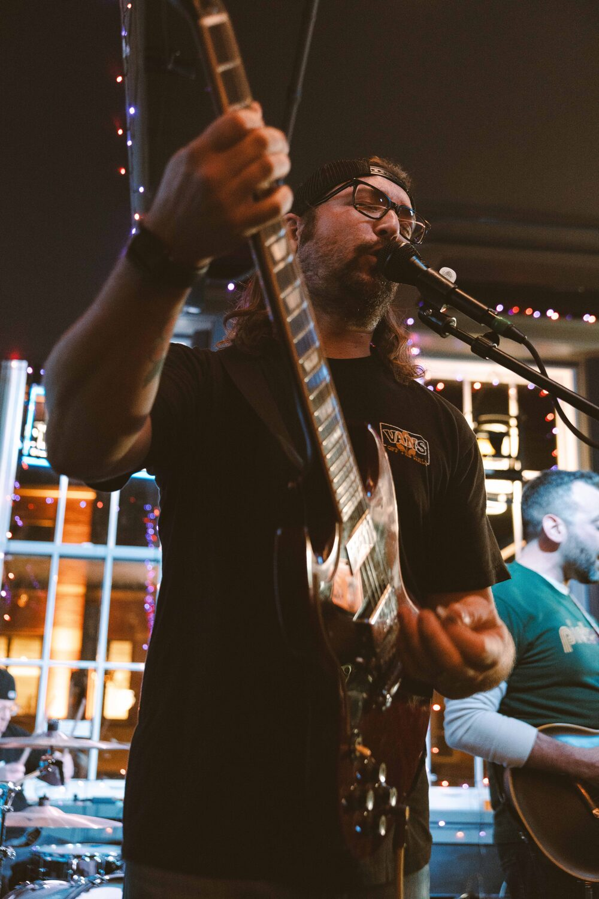

01
Marketing Consulting
Strategy sessions that leave you with a plan, not a pitch deck. We'll audit your site, your channels, and your messaging, then map out where to put your next dollar.
Marketing · Content · SEO · Podcasting
A Pittsburgh-based marketing practice for small businesses that want strategy with personality, run by the person who actually does the work.
01 / Services
Six lines of service, built to fit together. Hire for one, or let them compound.
Strategy sessions that leave you with a plan, not a pitch deck. We'll audit your site, your channels, and your messaging, then map out where to put your next dollar.
A content engine that sounds like you, not an algorithm. Pillars, cadence, calendar, the pages on your site to hold it, and the follow-through to actually ship it.
Words that do the work. Websites, landing pages, emails, scripts, written tight and edited tighter. No filler, no jargon, no corporate drift.
Rankings earned by writing things worth reading. Technical fixes where they matter, content built around real search intent, and nothing that'll embarrass you later.
From concept to published feed. Hosting, booking, producing, editing, and the kind of show notes that actually get read.
Posts that don't read like they were written by a committee. Platform-aware, on-voice, and built around the stuff your audience actually shows up for.
02 / Case Studies
A selection of work across SEO, content, podcasting, and social.
IT Services Provider / Healthcare + Real Estate
A 25-page service-section rewrite and SEO overhaul, built to attract the industries they actually wanted to serve.
14%
Month-over-month visitor growth
Oncology Membership Org
Built and produced a weekly healthcare podcast from concept to feed, with ad revenue and CE-credit integration.
1M+
All-time downloads
Behavior Analysis Clinic / Raleigh, NC
Daily posting across three platforms, two audiences, one voice. Built the calendar, wrote the copy, handed back the process.
754%
Reach growth on Meta
Gantry Kids & Teens / Long Island City
107 pages audited, title tags and alt text rebuilt, localized blog content shipped. A steady traffic lift and better-qualified visits.
15%
Year-over-year views
03 / About

Chris Pirschel / Founder, Producer, Writer
I've spent nearly 15 years building marketing and content for small businesses and startups. Brands, bands, and businesses. In-house and DIY. Long enough to know what works and what's theater.
I think the best marketing teaches. I think one good conversation can fuel a month of content. I think your website should work like a 24/7 salesperson so you can focus on the conversations that actually matter. And I think most businesses are sitting on more interesting material than they realize, they just need someone to help pull it out and put it into the world.
The name PosiJump comes from a band I started in high school. It's that airborne moment: guitars out, legs tucked like a cannonball. But it also signals the DIY ethos behind it, where I learned to build, market, and run something from the ground up. Still doing the same thing, just for other people's businesses now.
For business owners who want marketing that sounds like them, delivered by someone who actually does the work.
15
Years in the work
6
Services
1
Point of contact
The person you hire is the person doing the work.
No handoffs. No layers.
04 / Let's talk
Drop a line. First conversation's free. I'll listen, ask the annoying questions, and tell you straight whether I'm the right fit, or who is.
Based in
Pittsburgh-based. Remote-first. Wherever the work takes us.
Good fit for
Small businesses, solopreneurs, founders who want a real partner, not a deliverables machine.
Not a fit for
Anyone looking for synergy, leverage, or a journey to unlock.